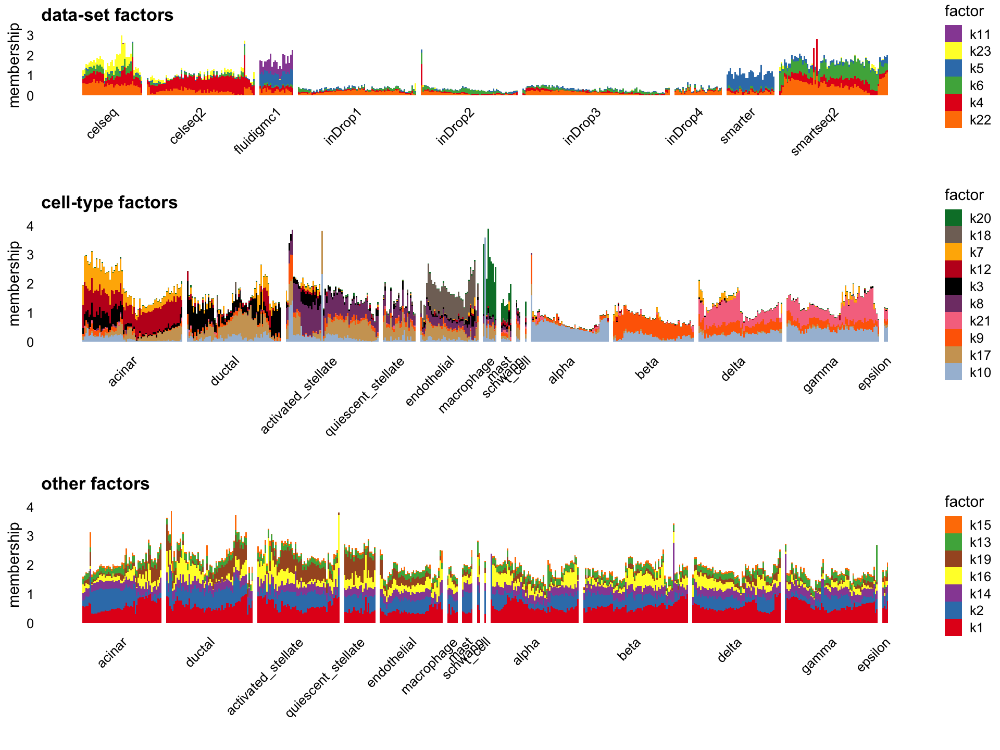

Last updated: 2025-01-29
Checks: 7 0
Knit directory:
single-cell-jamboree/analysis/
This reproducible R Markdown analysis was created with workflowr (version 1.7.1). The Checks tab describes the reproducibility checks that were applied when the results were created. The Past versions tab lists the development history.
Great! Since the R Markdown file has been committed to the Git repository, you know the exact version of the code that produced these results.
Great job! The global environment was empty. Objects defined in the global environment can affect the analysis in your R Markdown file in unknown ways. For reproduciblity it’s best to always run the code in an empty environment.
The command set.seed(1) was run prior to running the
code in the R Markdown file. Setting a seed ensures that any results
that rely on randomness, e.g. subsampling or permutations, are
reproducible.
Great job! Recording the operating system, R version, and package versions is critical for reproducibility.
Nice! There were no cached chunks for this analysis, so you can be confident that you successfully produced the results during this run.
Great job! Using relative paths to the files within your workflowr project makes it easier to run your code on other machines.
Great! You are using Git for version control. Tracking code development and connecting the code version to the results is critical for reproducibility.
The results in this page were generated with repository version bb2aac5. See the Past versions tab to see a history of the changes made to the R Markdown and HTML files.
Note that you need to be careful to ensure that all relevant files for
the analysis have been committed to Git prior to generating the results
(you can use wflow_publish or
wflow_git_commit). workflowr only checks the R Markdown
file, but you know if there are other scripts or data files that it
depends on. Below is the status of the Git repository when the results
were generated:
Untracked files:
Untracked: data/GSE132188_adata.h5ad.h5
Untracked: data/Immune_ALL_human.h5ad
Untracked: data/pancreas_endocrine.RData
Untracked: data/pancreas_endocrine_alldays.h5ad
Unstaged changes:
Modified: code/annotation_plots.R
Note that any generated files, e.g. HTML, png, CSS, etc., are not included in this status report because it is ok for generated content to have uncommitted changes.
These are the previous versions of the repository in which changes were
made to the R Markdown (analysis/pancreas_factors.Rmd) and
HTML (docs/pancreas_factors.html) files. If you’ve
configured a remote Git repository (see ?wflow_git_remote),
click on the hyperlinks in the table below to view the files as they
were in that past version.
| File | Version | Author | Date | Message |
|---|---|---|---|---|
| Rmd | bb2aac5 | Peter Carbonetto | 2025-01-29 | workflowr::wflow_publish("pancreas_factors.Rmd", verbose = TRUE, |
| html | 8ccf088 | Peter Carbonetto | 2025-01-29 | Build site. |
| html | e02c1f7 | Peter Carbonetto | 2024-11-27 | Improved the structure plots for the semi-NMF results in the pancreas_factors analysis. |
| Rmd | 94e20ef | Peter Carbonetto | 2024-11-27 | workflowr::wflow_publish("pancreas_factors.Rmd", verbose = TRUE) |
| html | 808032e | Peter Carbonetto | 2024-11-27 | Fixed a couple mistakes in the pancreas_factors analysis. |
| Rmd | ace097c | Peter Carbonetto | 2024-11-27 | workflowr::wflow_publish("pancreas_factors.Rmd", verbose = TRUE) |
| html | 826307e | Peter Carbonetto | 2024-11-27 | Build site. |
| Rmd | 0a32429 | Peter Carbonetto | 2024-11-27 | workflowr::wflow_publish("pancreas_factors.Rmd", verbose = TRUE) |
| html | d20a985 | Peter Carbonetto | 2024-11-26 | Added some summary text to the beginning of the pancreas_factors |
| Rmd | b58c81a | Peter Carbonetto | 2024-11-26 | workflowr::wflow_publish("pancreas_factors.Rmd", verbose = TRUE, |
| html | 10bdb89 | Peter Carbonetto | 2024-11-26 | A few more improvements to the structure plots in the pancreas_factors analysis. |
| Rmd | 86a4d09 | Peter Carbonetto | 2024-11-26 | workflowr::wflow_publish("pancreas_factors.Rmd", verbose = TRUE, |
| Rmd | a4ae693 | Peter Carbonetto | 2024-11-26 | Added semi-NMF results to pancreas_factors analysis. |
| Rmd | a24828a | Peter Carbonetto | 2024-11-26 | Added fastTopics structure plots to pancreas_factors analysis. |
| Rmd | e9fc660 | Peter Carbonetto | 2024-11-26 | Added structure plots for nnlm results to pancreas_factors analysis. |
| Rmd | b5e9110 | Peter Carbonetto | 2024-11-26 | Added structure plots for flashier NMF to pancreas_factors analysis. |
| Rmd | 3da7997 | Peter Carbonetto | 2024-11-21 | Added code chunk to pancreas_factors analysis to compare timings. |
| html | b9d08dd | Peter Carbonetto | 2024-11-21 | First build of the pancreas_factors workflowr analysis. |
| Rmd | 5d5c725 | Peter Carbonetto | 2024-11-21 | Added pancreas_factors.Rmd. |
This goal of this analysis is to apply a few different matrix factorization approaches to the pancreas data set and assess how well they work for this data set.
First, load the packages needed for this analysis.
library(Matrix)
library(fastTopics)
library(ggplot2)
library(cowplot)Set the seed for reproducibility.
set.seed(1)This is a function I will use below to subsample the cell types that have a lot of cells so that the rare cell types are more visible in the Structure plots.
subsample_cell_types <- function (x, n = 1000) {
cells <- NULL
groups <- levels(x)
for (g in groups) {
i <- which(x == g)
n0 <- min(n,length(i))
i <- sample(i,n0)
cells <- c(cells,i)
}
return(sort(cells))
}Load the pancreas data set and the outputs generated from running the
compute_pancreas_factors.R and
compute_pancreas_factors2.R scripts.
load("../data/pancreas.RData")
load("../output/pancreas_factors.RData")
timings0 <- timings
load("../output/pancreas_factors2.RData")
timings <- c(timings0,timings)This is a summary of the running times (in hours) for the model fitting (focus on the “elapsed” column):
round(do.call(rbind,timings)/60^2,digits = 2)
# user.self sys.self elapsed user.child sys.child
# nmf 0.17 0.02 0.12 0 0
# fl_nmf 8.33 0.02 1.43 0 0
# fl_snmf 8.31 0.02 1.38 0 0
# fasttopics 4.97 0.42 1.81 0 0
# fl_nmf_cc 8.44 0.07 1.50 0 0Fitting the topic model (“fasttopics”) and the three flashier models (“NMF”, “semi-NMF”, “NMF-CC”) each took 1-2 hours. Fitting the NMF model using the NNLM package was much, much faster (about 7 minutes). Note: Below I’ll explain what is the “NMF-CC” model.
The empirical Bayes NMF compellingly identifies several factors corresponding very well to both cell type and sequencing technology:
cells <- subsample_cell_types(sample_info$celltype,n = 500)
L <- fl_nmf_ldf$L
k <- ncol(L)
colnames(L) <- paste0("k",1:k)
batch_factors <- c(2:5,7:8,20)
celltype_factors <- c(6,11:19,21)
other_factors <- c(1,9:10,22:23)
celltype <- sample_info$celltype
celltype <-
factor(celltype,
c("acinar","ductal","activated_stellate","quiescent_stellate",
"endothelial","macrophage","mast","schwann","t_cell","alpha",
"beta","delta","gamma","epsilon"))
p1 <- structure_plot(L,topics = batch_factors,grouping = sample_info$tech,
gap = 3,perplexity = 70,n = 500) +
labs(y = "membership",title = "data-set factors",
fill = "factor",color = "factor")
p2 <- structure_plot(L[cells,],topics = celltype_factors,
grouping = celltype[cells],gap = 3,
n = 500,perplexity = 70) +
labs(y = "membership",title = "cell-type factors",
fill = "factor",color = "factor")
p3 <- structure_plot(L[cells,],topics = other_factors,
grouping = celltype[cells],gap = 3,
n = 500,perplexity = 70) +
labs(y = "membership",title = "other factors",
fill = "factor",color = "factor")
plot_grid(p1,p2,p3,nrow = 3,ncol = 1)
Note that the number of factors, 23, was automatically determined by flashier. Some structure was missed by this factorization and it is possible that forcing flashier to estimate more factors would have also picked up other intersting structure. Nonetheless, the flashier NMF seems to cope well here with separating the cell types from the batch effects.
To contrast this flashier result with a standard NMF (generated by NNLM), the factors in the standard NMF does not capture nearly as well the cell types and the batch structure. We don’t have the ground truth, but better correspondence between the provided cell annotations and the flashier result point toward the flashier fit being better.
scale_cols <- function (A, b)
t(t(A) * b)
W <- nmf$W
k <- ncol(W)
d <- apply(W,2,max)
W <- scale_cols(W,1/d)
colnames(W) <- paste0("k",1:k)
batch_factors <- c(1,6,7,10,13,14,16:18)
celltype_factors <- c(2,5,8,9,11,12,15,20:23)
other_factors <- c(3,4,19)
p1 <- structure_plot(W[,batch_factors],grouping = sample_info$tech,
gap = 3,perplexity = 70,n = 500) +
labs(y = "membership",title = "data-set factors",
fill = "factor",color = "factor")
p2 <- structure_plot(W[cells,celltype_factors],grouping = celltype[cells],
gap = 3,n = 500,perplexity = 70) +
labs(y = "membership",title = "cell-type factors",
fill = "factor",color = "factor")
p3 <- structure_plot(W[cells,other_factors],grouping = celltype[cells],
gap = 3,n = 500,perplexity = 70) +
labs(y = "membership",title = "other factors",
fill = "factor",color = "factor")
plot_grid(p1,p2,p3,nrow = 3,ncol = 1)
It is interesting that the flashier NMF factors are much more sparse:
pdat <- data.frame(flashier = quantile(L,seq(0,1,0.01)),
nnlm = quantile(W,seq(0,1,0.01)))
ggplot(pdat,aes(x = nnlm,y = flashier)) +
geom_line() +
geom_point() +
geom_abline(slope = 1,intercept = 0,color = "magenta",linetype = "dotted") +
theme_cowplot(font_size = 10)
| Version | Author | Date |
|---|---|---|
| 10bdb89 | Peter Carbonetto | 2024-11-26 |
The topic model (again with 23 factors/topics) has more difficulty than NMF separating the cell types from the batch/data-set effects:
L <- poisson2multinom(pnmf)$L
batch_topics <- c(2,5,6,11,12)
celltype_topics <- c(4,9,8,15,16,17,18,19,20)
celltype_topics2 <- c(1,3,7,10,13,14,21,22,23)
p1 <- structure_plot(L[,batch_topics],grouping = sample_info[,"tech"],
gap = 3,perplexity = 70,n = 500) +
ggtitle("data-set topics")
p2 <- structure_plot(L[cells,celltype_topics],grouping = celltype[cells],
gap = 3,perplexity = 70,n = 500) +
ggtitle("cell-type topics")
p3 <- structure_plot(L[cells,celltype_topics2],grouping = celltype[cells],
gap = 3,perplexity = 70,n = 500) +
ggtitle("more cell-type topics")
plot_grid(p1,p2,p3,nrow = 3,ncol = 1)
For example, topics 3, 10 and 23 have identified cell types specific to the Fluidigm C1 data only, whereas it would be preferrable to separate these data-set effects from the cell types:
i <- which(sample_info$tech == "fluidigmc1")
structure_plot(L[i,celltype_topics2],grouping = celltype[i],
gap = 3,perplexity = 30,n = 500)
The semi-NMF fit generated by flashier seems promising in that it separates data-set structure from cell-type structure. The individual factors seem at first glance to be harder to interpret than the flashier NMF factors, but the results nonetheless are intruiging:
L <- fl_snmf_ldf$L
x <- apply(L,2,function (x) quantile(x,0.995))
L <- scale_cols(L,1/x)
colnames(L) <- paste0("k",1:k)
batch_factors <- c(4:6,11,22:23)
celltype_factors <- c(3,7:10,12,17:18,20,21)
other_factors <- c(1:2,13:16,19)
p1 <- structure_plot(L[,batch_factors],grouping = sample_info$tech,gap = 3,
perplexity = 70,n = 500) +
labs(y = "membership",title = "data-set factors",
fill = "factor",color = "factor")
p2 <- structure_plot(L[cells,celltype_factors],
grouping = celltype[cells],
gap = 3,n = 500,perplexity = 70) +
labs(y = "membership",title = "cell-type factors",
fill = "factor",color = "factor")
p3 <- structure_plot(L[cells,other_factors],
grouping = celltype[cells],
gap = 3,n = 500,perplexity = 70) +
labs(y = "membership",title = "other factors",
fill = "factor",color = "factor")
plot_grid(p1 + ylim(0,3),
p2 + ylim(0,4),
p3 + ylim(0,4),
nrow = 3,ncol = 1,
rel_heights = c(2,3,3))
I found it more difficult to create nice Structure plots from the semi-NMF result because of the “spikiness” of the loadings.
Finally, mainly to see whether it was possible, I also tried fitting an NMF using flashier in which there were additional “cross-cutting factors” (CC) that could capture both increases and decreases in expression, with the hope that these CC factors could better capture the data-set effects. It is unclear this provided an improvement over the flashier NMF results (which were already quite good), but I think it is intruiging this is a possibility in flashier.
set.seed(1)
L <- fl_nmf_cc_ldf$L
k <- ncol(L)
colnames(L) <- paste0("k",1:k)
batch_factors <- c(1,2:8)
celltype_factors <- c(9,12,13:21)
other_factors <- c(10,11,22:23)
p1 <- structure_plot(L,topics = batch_factors,grouping = sample_info$tech,
gap = 3,perplexity = 70, n = 500) +
labs(y = "membership",title = "data-set factors",
fill = "factor",color = "factor")
p2 <- structure_plot(L[cells,],topics = celltype_factors,
grouping = celltype[cells],
gap = 3,n = 500,perplexity = 70) +
labs(y = "membership",title = "cell-type factors",
fill = "factor",color = "factor")
p3 <- structure_plot(L[cells,],topics = other_factors,
grouping = celltype[cells],
gap = 3,n = 500,perplexity = 70) +
labs(y = "membership",title = "other factors",
fill = "factor",color = "factor")
plot_grid(p1,p2,p3,nrow = 3,ncol = 1)
sessionInfo()
# R version 4.3.3 (2024-02-29)
# Platform: aarch64-apple-darwin20 (64-bit)
# Running under: macOS Sonoma 14.7.1
#
# Matrix products: default
# BLAS: /Library/Frameworks/R.framework/Versions/4.3-arm64/Resources/lib/libRblas.0.dylib
# LAPACK: /Library/Frameworks/R.framework/Versions/4.3-arm64/Resources/lib/libRlapack.dylib; LAPACK version 3.11.0
#
# locale:
# [1] en_US.UTF-8/en_US.UTF-8/en_US.UTF-8/C/en_US.UTF-8/en_US.UTF-8
#
# time zone: America/Chicago
# tzcode source: internal
#
# attached base packages:
# [1] stats graphics grDevices utils datasets methods base
#
# other attached packages:
# [1] cowplot_1.1.3 ggplot2_3.5.0 fastTopics_0.7-07 Matrix_1.6-5
#
# loaded via a namespace (and not attached):
# [1] gtable_0.3.4 xfun_0.42 bslib_0.6.1
# [4] htmlwidgets_1.6.4 ggrepel_0.9.5 lattice_0.22-5
# [7] quadprog_1.5-8 vctrs_0.6.5 tools_4.3.3
# [10] generics_0.1.3 parallel_4.3.3 tibble_3.2.1
# [13] fansi_1.0.6 highr_0.10 pkgconfig_2.0.3
# [16] data.table_1.15.2 SQUAREM_2021.1 RcppParallel_5.1.7
# [19] lifecycle_1.0.4 truncnorm_1.0-9 farver_2.1.1
# [22] compiler_4.3.3 stringr_1.5.1 git2r_0.33.0
# [25] progress_1.2.3 munsell_0.5.0 RhpcBLASctl_0.23-42
# [28] httpuv_1.6.14 htmltools_0.5.7 sass_0.4.8
# [31] yaml_2.3.8 lazyeval_0.2.2 plotly_4.10.4
# [34] crayon_1.5.2 later_1.3.2 pillar_1.9.0
# [37] jquerylib_0.1.4 whisker_0.4.1 tidyr_1.3.1
# [40] uwot_0.2.2.9000 cachem_1.0.8 gtools_3.9.5
# [43] tidyselect_1.2.1 digest_0.6.34 Rtsne_0.17
# [46] stringi_1.8.3 dplyr_1.1.4 purrr_1.0.2
# [49] ashr_2.2-66 labeling_0.4.3 rprojroot_2.0.4
# [52] fastmap_1.1.1 grid_4.3.3 colorspace_2.1-0
# [55] cli_3.6.2 invgamma_1.1 magrittr_2.0.3
# [58] utf8_1.2.4 withr_3.0.0 prettyunits_1.2.0
# [61] scales_1.3.0 promises_1.2.1 rmarkdown_2.26
# [64] httr_1.4.7 workflowr_1.7.1 hms_1.1.3
# [67] pbapply_1.7-2 evaluate_0.23 knitr_1.45
# [70] viridisLite_0.4.2 irlba_2.3.5.1 rlang_1.1.3
# [73] Rcpp_1.0.12 mixsqp_0.3-54 glue_1.7.0
# [76] jsonlite_1.8.8 R6_2.5.1 fs_1.6.3